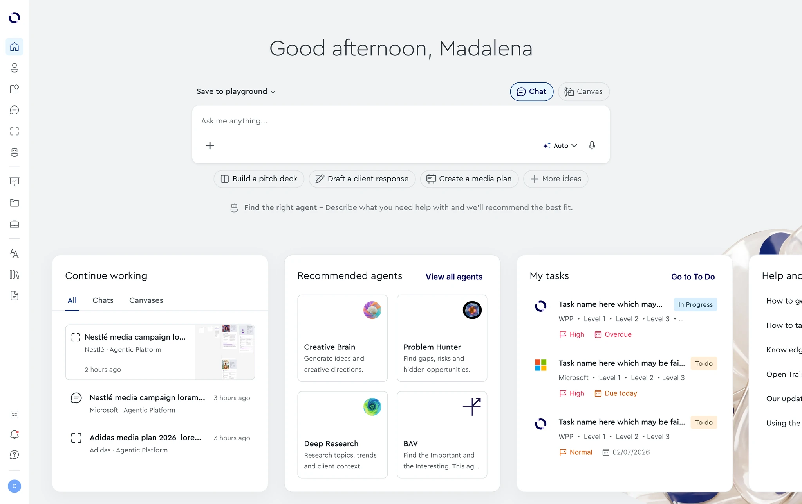
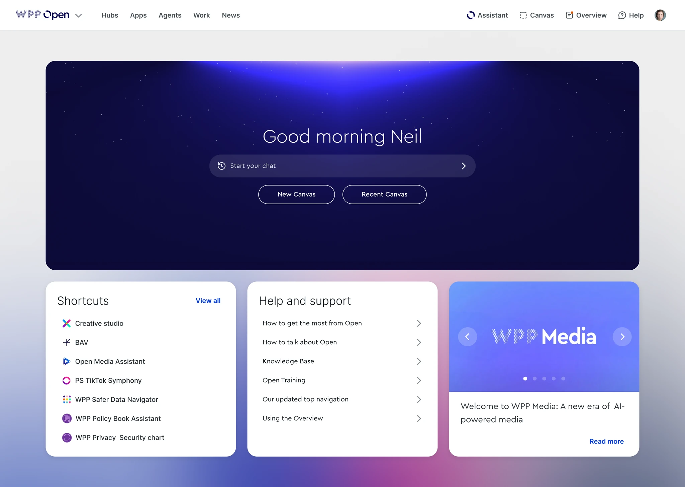
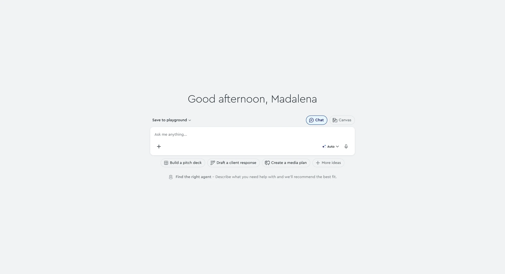
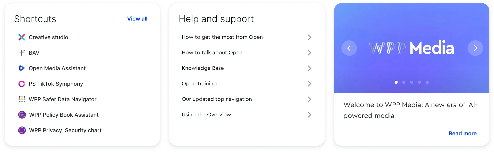
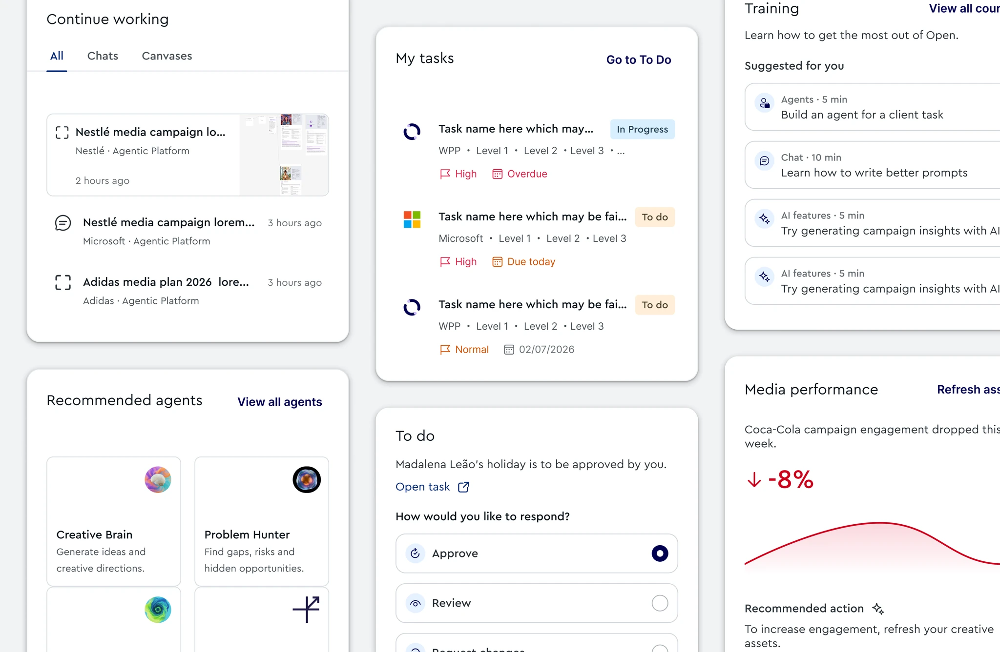

WPP OPEN
A homepage that
moves work forward.
I helped rethink how people resume work, discover relevant AI capabilities and see what needs their attention across WPP Open.
Explore the thinking
- MY ROLE
- Product Designer
- TIMELINE
- Ongoing
- TOOLS
- Figma
- SECTOR
- Enterprise AI
- THE TEAM
- 2 PD · 4 FE · 4 BE
1 PM · 2 QA
CONTEXT + PROBLEM
From entry points
to momentum.
People arrived with work already in progress. The homepage needed to meet them there.
WPP Open brings tools, data and AI agents together for marketing teams and clients, across strategy, campaign creation, content production and media planning.
As Chat, Canvas, Agents and workspaces came together, the homepage still acted mostly as a set of entry points. The opportunity was to support continuity: help people pick up relevant work, understand their context and find useful capabilities.
What deserves to be
on the homepage at all?

Access to the platform, with limited support for work already underway.
RESEARCH + REFRAME
Listen first.
Find the pattern.
Qualitative
interviews
Questionnaire
responses
People wanted to return to meaningful work, understand the client or project around it, and discover AI capabilities they could actually use. Some also mistook the Chat input for search.
“Users are not looking for what work to do next; they are looking for help moving work forward.”
Continuity
Make it easy to return to meaningful work.
Context
Keep the relevant client or project in view.
Discovery
Show useful AI capabilities and how to begin.
Role variance
Recognise that different people need different signals.
The question became: how can the homepage help people resume, act, discover and orient?
PRIORITISING THE EXPERIENCE
Three connected
design decisions.
I explored 12 contextual card concepts, combining ideas that overlapped and prioritising the clearest user needs.
The work also reached beyond the cards: how people begin a task, what the homepage surfaces and how they move through the platform.
The single-line field could read as search. Chat and Canvas offered little guidance on how to begin.

A recognisable composer makes Chat and Canvas explicit. Prompts and visible controls help people understand what they can do.
Make the first move clearer.
The input should explain its possibilities before someone starts typing. The proposed composer brings the mode choice, suggested prompts and a route to the right agent into one starting point.

Shortcuts, support and announcements provided destinations, but little help with current work.

Continue Working, To Do and Recommended Agents emerged as the strongest directions for continuity, attention and discovery.
Give every card a job.
Overlapping ideas were combined: urgent tasks became part of To Do, suggested next steps became contextual actions, and training and onboarding became one learning concept. The focus moved toward the value each card provides.
OUTCOME + NEXT STEPS
A clearer direction.
More to learn.
The work connected the composer, contextual cards and navigation around one shared purpose: helping people start, resume and find their way through work.
Clearer entry points
Explicit modes, prompts and a route to agent discovery.
More purposeful content
Cards shaped around ongoing work, tasks and relevant capabilities.
A contextual structure
Tools, work and resources organised within the workspace.


ONE CASE STUDY. PART OF A BIGGER PICTURE.